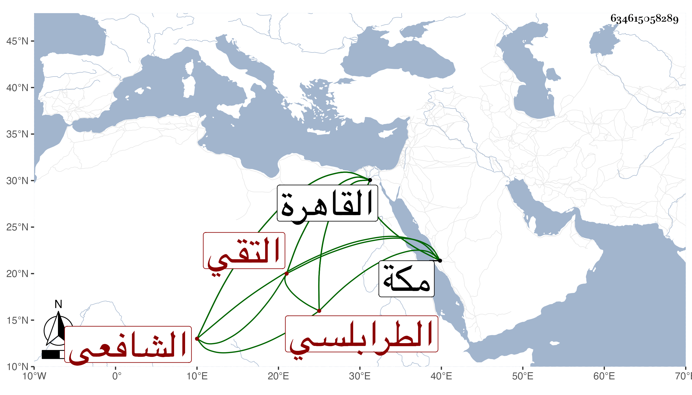

0902Sakhawi.DawLamic.ITO20230111-ara1.EIS1600.634615058289
Biography ID: 634615058289
72
أبو بكر بن إسماعيل بن عمر التقي الطرابلسي الشافعي نزيل القاهرة . ممن أخذ عن السوبيني وغيره وتميز وقدم القاهرة قبيل الخمسين فقطنها مدة مع بلدييه ابني ابن بهادر يعلمهما منجمعا على نفسه في الكتابة بحيث كتب بخطه أشياء حسنة وخطه جيد متقن مع تدين وسكون وقد سمع اليسير على شيخنا وختم البخاري بالظاهرية على الأربعين ثم سافر لمكة فأقام بها على خير حتى مات قبيل الستين فيما أظن رحمه الله .
